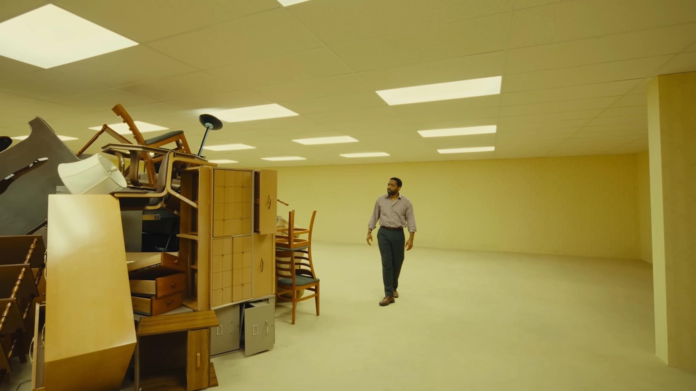
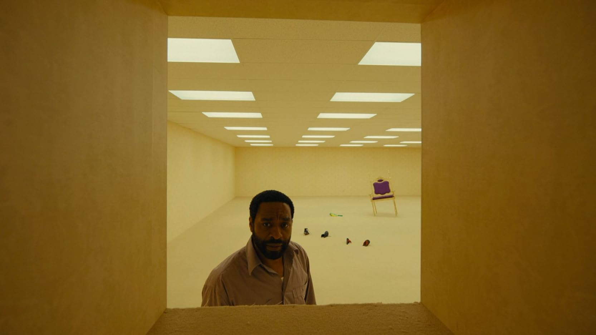
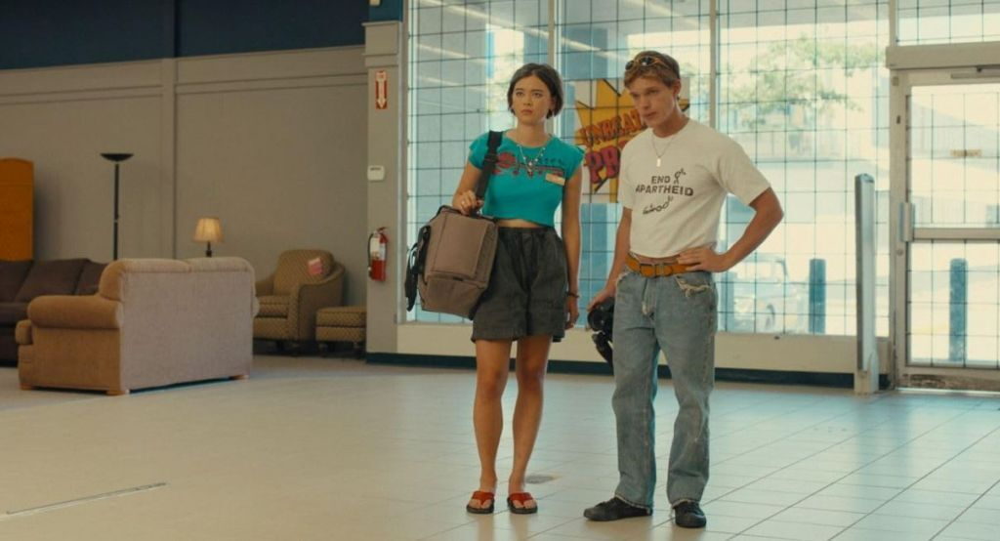

Backrooms é um fenômeno das creepypastas da internet que tomou conta da timeline de muita gente nos últimos anos. A ideia gerou inúmeros jogos, teorias e adaptações, mas agora retorna em sua forma mais ambiciosa: um longa-metragem dirigido por seu próprio criador original, que concebeu esse universo ainda na adolescência. E já adiantando a resposta: o resultado diferente de grandes investimentos e blockbusters é uma boa trama.
Assim como no conceito que conquistou a internet, somos transportados para os anos 90 e aprisionados em um ambiente confuso, inóspito e desconfortável. Ao mesmo tempo, existe algo estranhamente fascinante nesses corredores infinitos. As Backrooms lembram uma obra de arte surrealista, um espaço impossível cuja arquitetura parece ter sido criada para provocar inquietação.
O filme é propositalmente monótono, e isso pode afastar parte do público. Existem protagonistas e uma narrativa humana acompanhando os acontecimentos, mas nenhum deles consegue competir com o verdadeiro destaque da obra: o próprio ambiente. As Backrooms funcionam quase como um organismo vivo. Nunca sabemos o que existe atrás da próxima parede, o que habita aquele espaço ou quais regras regem aquele lugar sem lógica aparente.
Apesar da ambientação ser o principal atrativo, não podemos esquecer que ainda estamos diante de um filme de terror — e de um terror profundamente psicológico. O longa explora esse aspecto por meio de sessões de terapia que ajudam a construir o estado mental dos personagens. A primeira parece relativamente comum, mas a última se transforma em uma experiência angustiante e desconfortável, elevando bastante a tensão emocional.



O filme dedica um bom tempo para explorar as Backrooms, mas fica aquela sensação de que ainda havia mais a ser mostrado. Estamos falando de um complexo infinito de salas e corredores, então sempre existe espaço para novas descobertas. Se isso pode ser considerado um defeito, o outro seria justamente sua lentidão. Porém, é difícil criticar completamente essa característica quando ela parece fazer parte da própria proposta. Afinal, estamos acompanhando um filme sobre um lugar essencialmente monótono e repetitivo.
A reta final entrega os momentos mais conflitantes da produção. Kane Pixels, responsável pelos curtas que popularizaram a franquia, assume aqui apenas a direção. O roteiro não foi escrito por ele, e isso pode causar estranhamento em quem acompanha seu trabalho há anos. Algumas escolhas narrativas podem dividir opiniões, mas dificilmente podem ser chamadas de ruins. Considerando toda a carga psicológica construída ao longo da obra, o desfecho funciona como uma conclusão definitiva e bastante concreta para a jornada apresentada.
"As Backrooms não são apenas o cenário do filme: são sua verdadeira protagonista, um organismo hostil e fascinante do qual nunca sabemos o que esperar."
Então, vale a pena se perder nesse não-lugar? Se você aprecia terror psicológico, narrativas contemplativas e a sensação constante de desconforto proporcionada pelo desconhecido, a resposta é sim. Backrooms talvez não seja o filme que muitos imaginavam, mas certamente é uma experiência intrigante que entende muito bem o fascínio por trás desse estranho labirinto infinito.
✔ O QUE É BOM
- Atmosfera extremamente imersiva e desconfortável.
- As Backrooms são tratadas como uma verdadeira personagem da história.
✖ O QUE NÃO É BOM
- Ritmo bastante lento e contemplativo.
- Explora menos ambientes do que o conceito permitiria.
Discussão e Opiniões